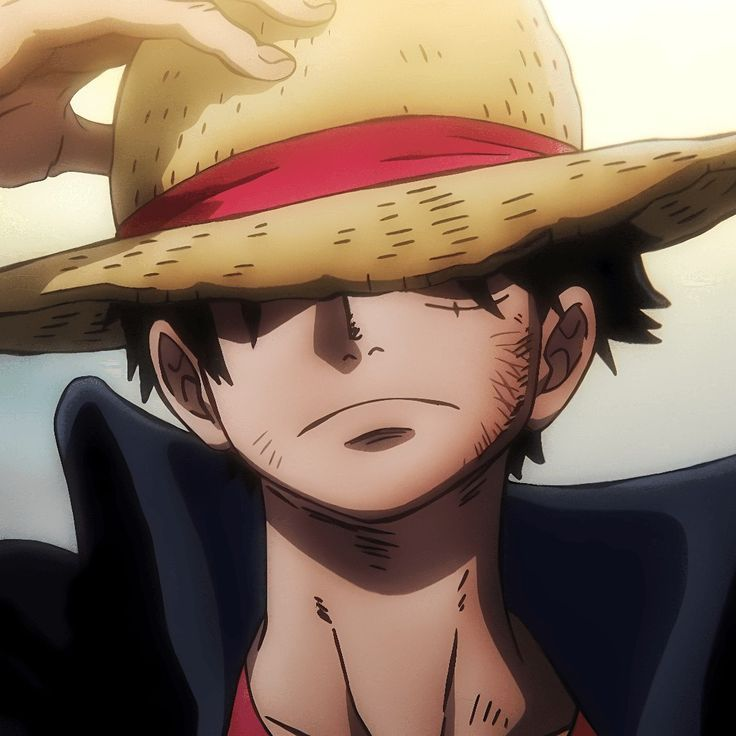
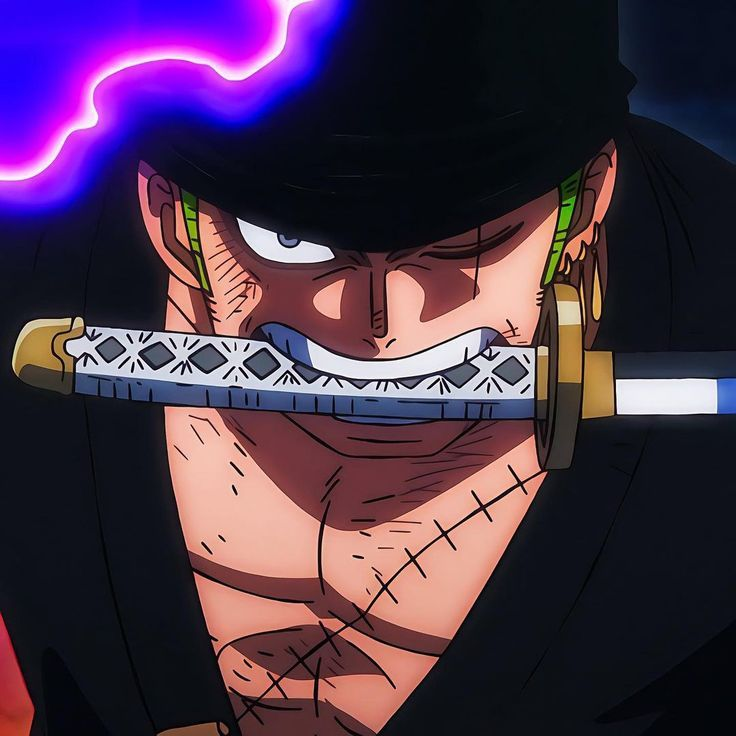
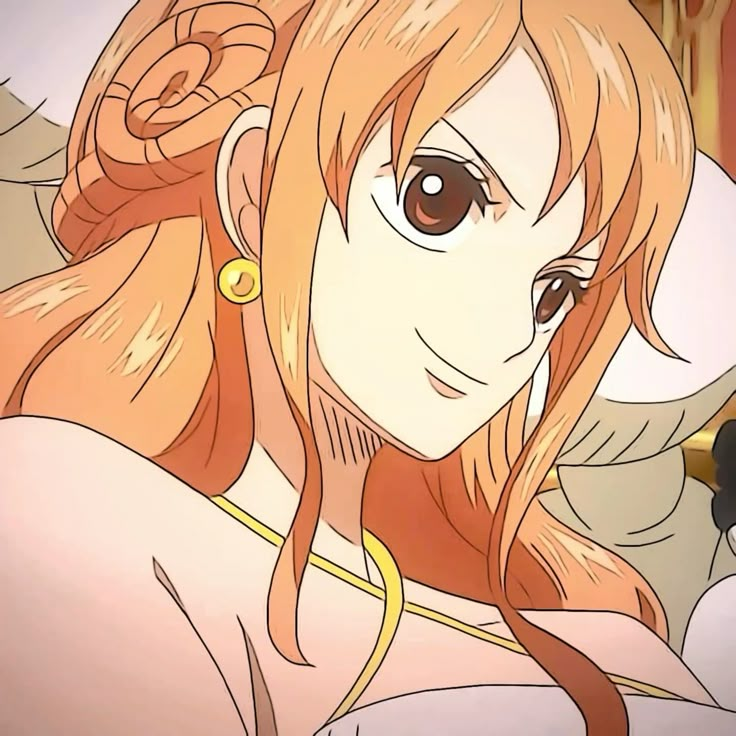
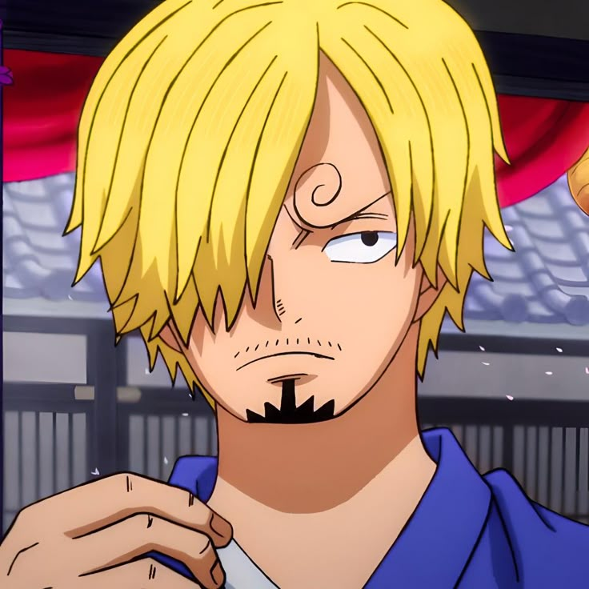

Mugiwaras
One piece se destaca por tener grandes personajes, entre estos se encuentran los Mugiwaras, la tripulacion de Monkey D. Luffy, aqui describiremos los que para nosotros son los mejores Sombrero de paja.
Monkey D. Luffy
Monkey D. Luffy es un joven pirata de 19 años (tras el timeskip) con un espíritu indomable, un corazón enorme y un sueño tan grande como el océano: encontrar el One Piece, el tesoro legendario dejado por Gol D. Roger, y convertirse en el Rey de los Piratas. Nacido en la Villa Foosha en East Blue, Luffy es el capitán de los Piratas del Sombrero de Paja, una tripulación que él mismo formó para perseguir su ambición, y lleva consigo un sombrero de paja que le dio su ídolo, Shanks "el Pelirrojo", como símbolo de su promesa de grandeza.
Ronoroa Zoro
Roronoa Zoro es el primer miembro en unirse a la tripulación de los Sombrero de Paja y el espadachín principal del grupo. Con 21 años (tras el timeskip), Zoro es un hombre de voluntad férrea cuyo sueño es convertirse en el mejor espadachín del mundo, un objetivo que persigue para cumplir una promesa hecha a su amiga de la infancia, Kuina, y para superar al actual número uno, Dracule Mihawk. Originario de Shimotsuki Village en East Blue, su vida está definida por la espada, la disciplina y una lealtad inquebrantable hacia Luffy.
Nami
Nami es la navegante de los Piratas del Sombrero de Paja y la tercera en unirse oficialmente a la tripulación de Luffy (aunque su ingreso definitivo ocurre tras Arlong Park). Con 20 años (tras el timeskip), Nami es una joven ingeniosa y decidida cuyo sueño es dibujar un mapa completo del mundo, una meta que refleja su pasión por la navegación y su deseo de libertad. Originaria de la Villa Cocoyashi en East Blue, su vida estuvo marcada por la tragedia y la lucha, pero su espíritu resiliente la convirtió en una de las piezas clave de la tripulación.
Vinsmoke Sanji
Vinsmoke Sanji, conocido simplemente como Sanji, es el cocinero de los Piratas del Sombrero de Paja y el quinto miembro en unirse a la tripulación de Luffy. Con 21 años (tras el timeskip), Sanji nació en el North Blue como parte de la infame familia Vinsmoke, pero su verdadera esencia se forjó en el Baratie bajo la tutela de Zeff "Pata Roja". Su sueño es encontrar el All Blue, un legendario mar donde se unen las especies de todos los océanos, un reflejo de su pasión por la cocina y su deseo de un mundo sin hambre.